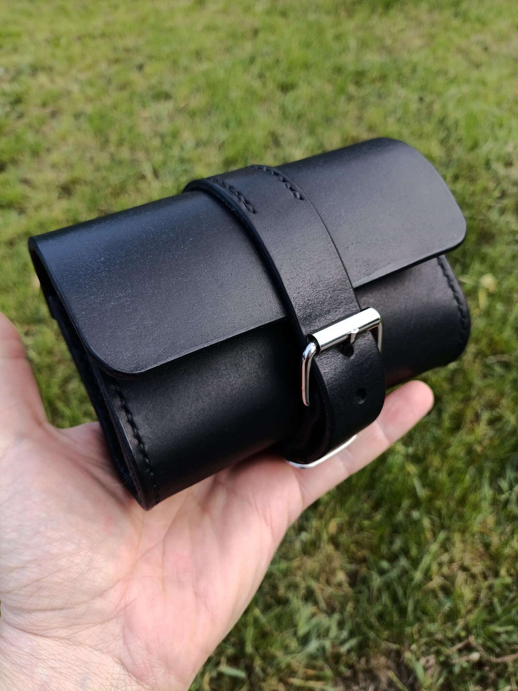

Handmade Leather EDC Belt Pouch / Multitool & Folding Knife Sheath / EveryDay Carry Belt Organizer by Alex Polak
A handmade full-grain leather EDC belt pouch designed to keep coins, keys and everyday essentials organized and easily accessible.
Price: $69 USD
Buy on EtsyHandmade Leather EDC
Keep everyday essentials organized and close at hand with this handmade full-grain leather EDC belt pouch by Alex Polak. Designed for practical everyday carry, it provides a compact way to carry coins, keys and useful gear such as a heavy multitool, folding knife, flashlight or tactical pen without overloading your pockets.
The pouch measures 5.90 inches (150 mm) in length, 3.93 inches (100 mm) in height and 1.96 inches (50 mm) in depth. Its 4 mm leather wall provides a substantial, structured build, while the belt design fits standard belts up to 1.57 inches (40 mm) wide.
Every piece is made by hand in the Alex Polak workshop, with a focus on functional design and long-term everyday use. If your knife or multitool requires a different fit, custom sizing can be made according to your measurements. Please provide the item's dimensions before ordering to confirm the best fit.
Product Details
- Material: Full-grain leather
- Overall dimensions: 5.90 inches (150 mm) length × 3.93 inches (100 mm) height × 1.96 inches (50 mm) depth
- Leather wall thickness: 4 mm
- Belt compatibility: Fits standard belts up to 1.57 inches (40 mm) wide
- Handmade leather construction
- Intended for coins, keys and everyday essentials, including heavy multitools, folding knives, flashlights and tactical pens
- Custom sizing available if a knife or multitool does not fit the standard case
Get This Handmade Leather Product
This handmade leather product is available through the LeatherBagsKingdom Etsy shop.
Buy on Etsy